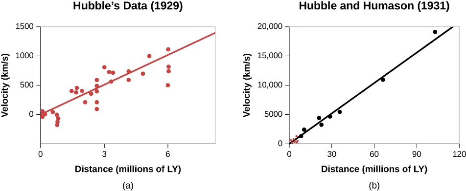

expansion
ASTR 101 · Lecture 13
Cosmology and the Large-Scale Universe
Evidence, model, and quantitative reasoning
Learning Goals
- Explain why this lecture's central phenomenon matters: on the largest scales, galaxies trace an expanding universe with a measurable history, composition, and structure.
- Use the key model idea that expansion relates redshift and distance, but recession is not ordinary motion through static space.
- Apply the lecture's quantitative tool with units, assumptions, and a physical interpretation.
- Correct the misconception: The universe does not have a center in the simple expanding-space model; every distant observer sees large-scale expansion.
Reading anchor: OpenStax Astronomy 2e, Chapter 29.1-29.6 on redshift, expansion, the Hubble law, cosmic background radiation, and cosmological evidence.
Why This Question Matters
Slipher's redshifts, Hubble and Lemaitre's expansion interpretation, and the discovery of the cosmic microwave background transformed cosmology from speculation into measurement.
Opening Phenomenon
On the largest scales, galaxies trace an expanding universe with a measurable history, composition, and structure.
First question: what is directly observed, and what part is an explanation built from a model?
Vocabulary for Reasoning
Hubble-Lemaitre law
cosmic microwave background
lookback time
dark matter
dark energy
large-scale structure
Use these terms to describe evidence and relationships, not as isolated vocabulary.
Evidence We Need to Explain
- Distant galaxies show systematic redshifts.
- The cosmic microwave background is nearly uniform but has tiny structure.
- Galaxy clustering and lensing reveal matter distribution across cosmic time.
Physical or Geometric Model
- Expansion relates redshift and distance, but recession is not ordinary motion through static space.
- The Big Bang model describes a hot dense early state, not an explosion into pre-existing space.
- Modern cosmology fits multiple evidence streams with a small set of parameters.
Quantitative Tool
\[ v = H_0 d \]
Use the Hubble law as a low-redshift linear model and look for scatter from peculiar motion and uncertainty.
Worked Example
- Using H0 = 70 km/s/Mpc, a galaxy at 100 Mpc has approximate recession speed 7000 km/s.
- This low-redshift calculation is a first model, not a complete distance-redshift relation.
- Uncertainty in distance and peculiar velocity affects the inference.
The answer should state that the calculation is an approximation and name one source of scatter.
Visual Reasoning
Connect redshift, distance, expansion, and model limits; identify where simple Hubble-law reasoning stops.
- What does the slope represent?
- Where would peculiar velocities add scatter?
- Why is this only a low-redshift approximation?

Common Misconception
The universe does not have a center in the simple expanding-space model; every distant observer sees large-scale expansion.
Correct it by focusing on expansion of space and the absence of a privileged center.
Active Learning Segment
Students interpret a redshift-distance plot and identify scatter, slope, outliers, and model limitations.
Write a prediction first, compare reasoning with a neighbor, then revise your answer in one sentence.
Lab or Observing Connection
The analysis activity uses redshift-distance data and discusses limits of simple Hubble-law reasoning. Your redshift-distance analysis should identify slope, scatter, and limits of the simple model.
Synthesis
Cosmology is evidence synthesis at scale: redshift, background radiation, element abundances, and structure must agree.
- What does redshift show?
- Where does the Hubble law apply?
- Which evidence streams support modern cosmology?
References and Visual Credits
- OpenStax, Astronomy 2e: OpenStax Astronomy 2e, Chapter 29.1-29.6 on redshift, expansion, the Hubble law, cosmic background radiation, and cosmological evidence.
- Local reference copy:
references/openstax-astronomy-2e.pdf. - Visual: The slope of recession velocity versus distance is the Hubble constant; the historical data also show scatter and calibration limits. Credit: OpenStax Astronomy 2e, Fig. 26.15, CC BY-NC-SA 4.0; adapted from Hubble and Humason data.